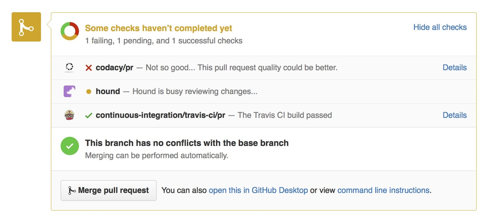
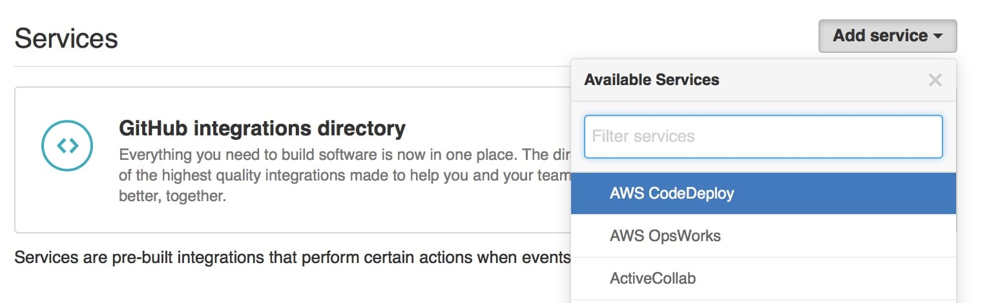
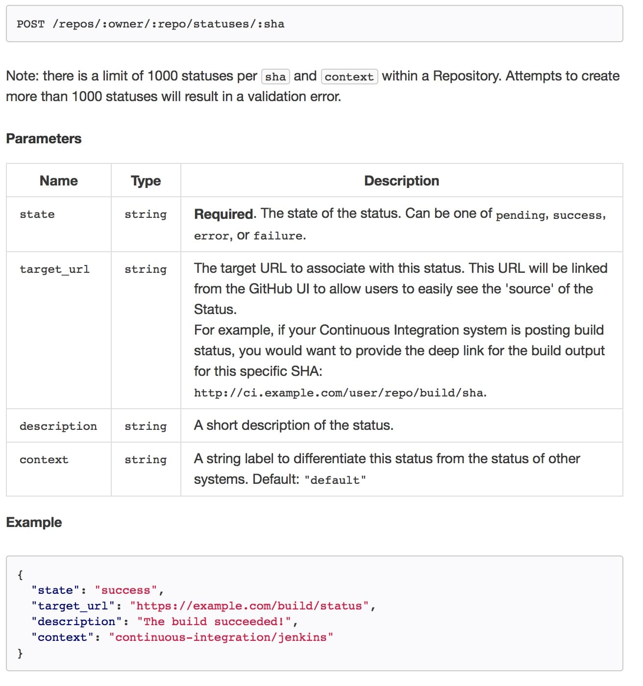
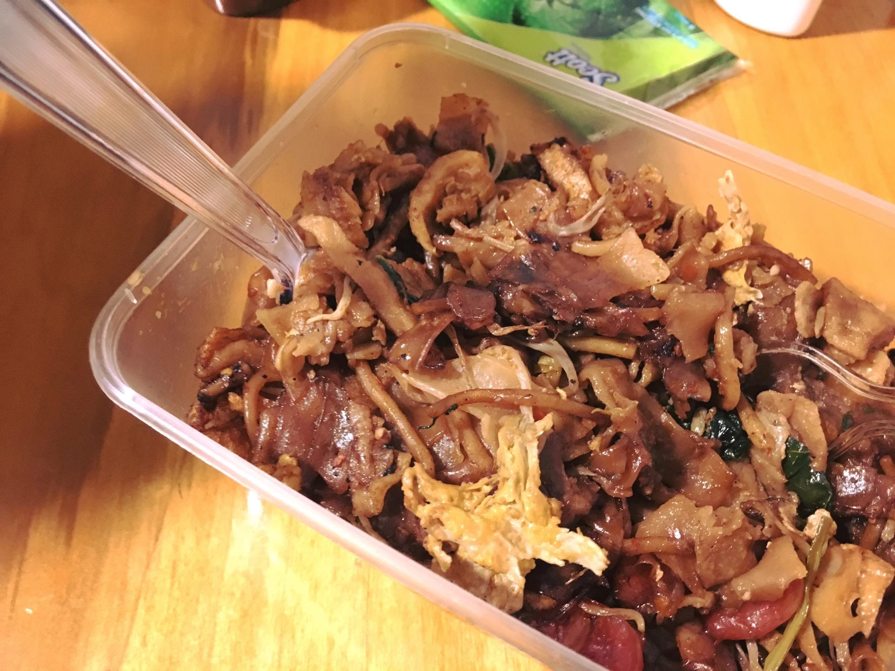

Sunday, 12 June 2016 at 2:06 PM
Weekly Log #11
UserTesting
Dinner with Imad
One of our colleagues, Imad, is returning to Morocco :( He’ll continue to be a UT employee working from remote :)
Iman said he wanted to try Singaporean food, so we brought him to a Singaporean restaurant in Cupertino 🍲
GitHub functionality for Hubot
I’ve been hacking on something for the hubot-based chatbot I built a couple of weeks earlier. The Engineering team would like to control PR merges for a particular repository, especially when it is being built or deployed via continuous integration. The current method is to alert everyone on Slack not to merge, which works but is kind of clumsy :/
GitHub introduced their status mechanism a couple of years ago. It’s the thing that allows PRs to have checks like these:

At first, it seemed to be impossible to add a custom check. If you went to the services setting of any repository, it seemed that GitHub only allowed a predefined list:

However, GitHub’s API seems to accept custom labels, and will create new ones when a custom string is POSTED in the context field:

This custom functionality will eventually be realised as a command from Slack, which will mark all open PRs as allowed-to-merge or disallowed-to-merge accordingly.
Friday

Our friend was visiting from Singapore as he was attending WWDC the following week. He brought along char kway teow from Jurvis’ grandparents. So good!
Saturday
I visited Apple HQ with the friend from Singapore. Unfortunately, it was a Saturday, so we couldn’t visit the campus beyond the Apple Store there, which is open to public.
Apple Store @ Apple Campus. It’s the store with the new exclusive tees.
🍎💻🖥📱